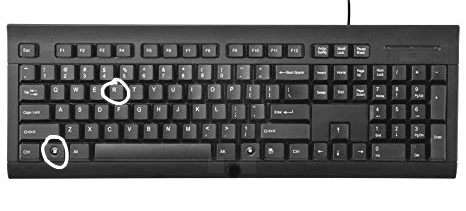
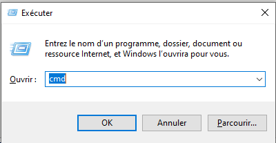
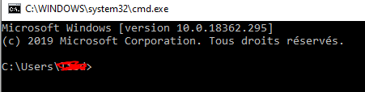
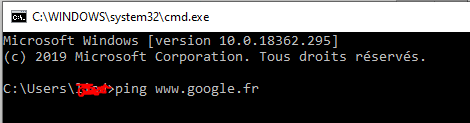
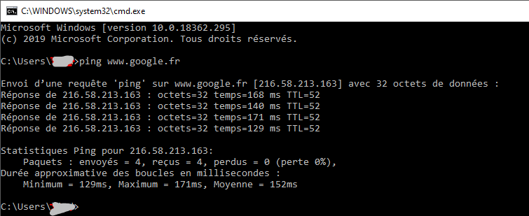
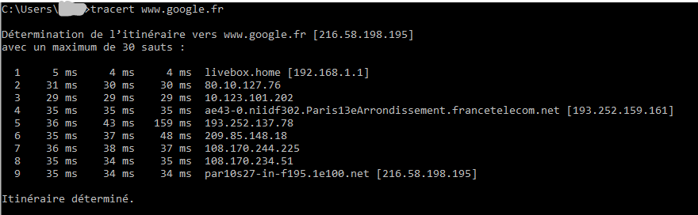
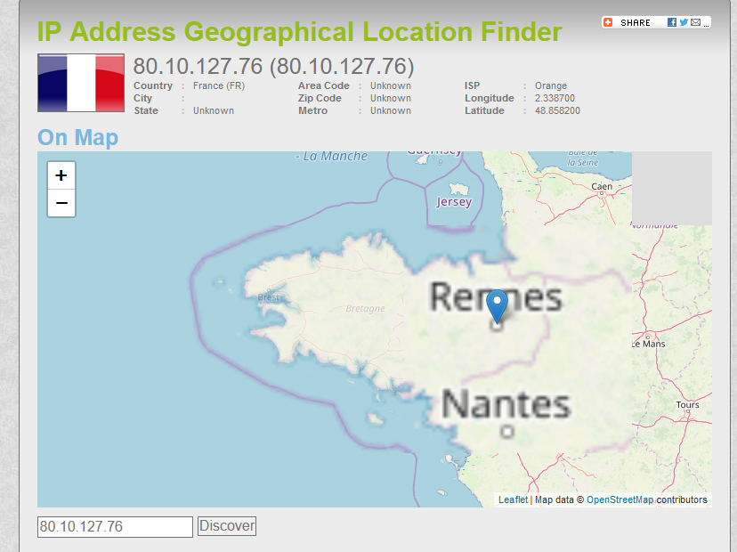
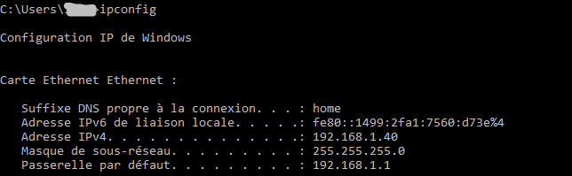
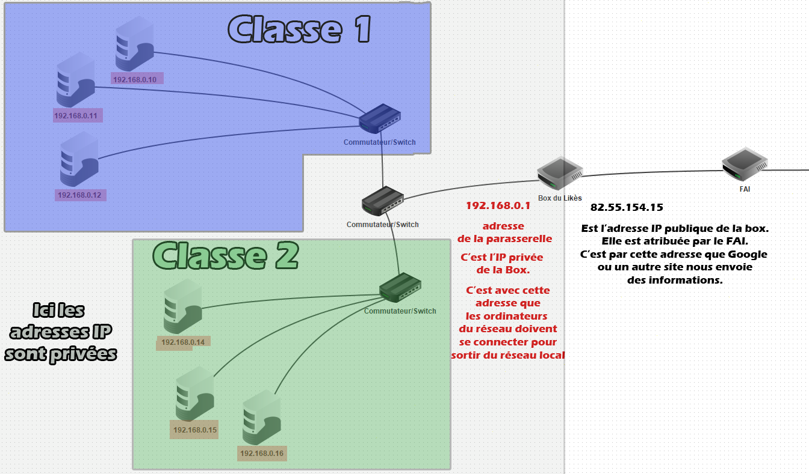
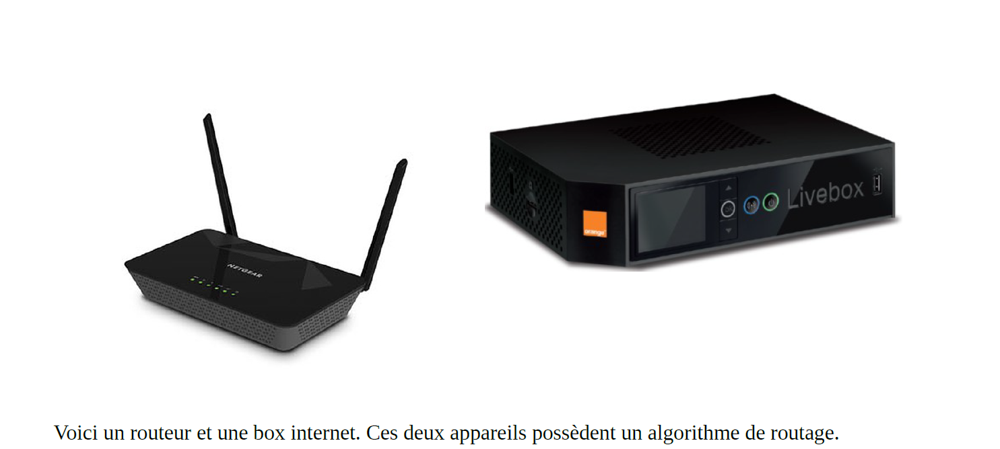

Publique Adresse IP publique
C’est l’adresse IP de votre box internet. Elle est attribuée par votre FAI (Fournisseur d’Accès à Internet).
Chapitre 1 – Internet
Pour cette première partie, nous allons envoyer des paquets à un serveur de Google grâce à l’invite de commande Windows. L’invite de commande permet d’exécuter des actions avancées du système d’exploitation.

cmd et appuyez sur la touche Entrée.


ping www.google.fr


ping.Votre ordinateur joue le rôle d’émetteur : il envoie 4 paquets de 32 octets chacun à une adresse IP. Dans cet exemple, c’est l’adresse 216.58.213.163. Il nous indique le temps qu’a mis chaque paquet pour arriver au destinataire, ainsi que le temps moyen. Ici, il est de 152 ms.
Il est fort possible que vous n’ayez pas la même adresse IP, c’est normal : google.fr possède plusieurs serveurs et donc plusieurs adresses IP.
Le TTL d’un paquet indique le nombre maximal de routeurs intermédiaires que l’on peut encore traverser pour atteindre la cible. Dans notre exemple, on peut passer par 52 routeurs au maximum pour atteindre le destinataire.
L’adresse IP de Google obtenue est 216.58.213.163. Qu’arrivera-t-il si l’on tape cette adresse IP dans un navigateur web ? Ouvrez un navigateur et copiez-collez l’adresse IP que vous avez obtenue dans l’invite de commande. Sur quel site tombez-vous ?
Le Domain Name System, généralement abrégé DNS (« système de noms de domaine »), est le service informatique distribué utilisé pour faire correspondre à une adresse IP un ou plusieurs noms de domaine Internet.
Dans notre exemple, 216.58.213.163 et google.fr correspondent au même site internet.
À votre avis, pourquoi utilise-t-on l’adresse DNS plutôt que l’adresse IP pour naviguer sur le web ?
Dans notre première manipulation, le nombre maximal de routeurs pour aller au destinataire était de 52. Dans cette manipulation, nous allons chercher à connaître les adresses des différents routeurs intermédiaires avant d’arriver au destinataire.
Pour cela, tapez dans l’invite de commande :
tracert www.google.fr

tracert.Pour arriver à l’adresse IP correspondant à un des serveurs de google.fr, on passe ici par 9 machines différentes, et cela en quelques secondes. La première adresse est votre adresse locale / privée, celle de votre box internet. La dernière correspond à celle d’un serveur Google.
Pour observer par quelles destinations nos paquets ont été envoyés au serveur Google, nous utiliserons le site iplocation.io. Nous saisissons sur le site les différentes adresses IP obtenues, en commençant par la deuxième (la première correspond à celle du Likès).

En réitérant le procédé avec les autres adresses IP, on sait que pour envoyer un paquet à Google, on est passé par les villes suivantes :
Quimper → Rennes → Paris → une ville du Kansas → Grand Rapids (État de l’Illinois) → Mountain View (Californie)
Testez avec les adresses IP que vous avez obtenues avec la commande tracert. Votre liste de villes :
Lorsque l’on va sur google.fr, une page web s’affiche sur notre navigateur : Google nous envoie donc des informations sur notre ordinateur, à notre adresse IP.
Pour connaître son adresse IP (publique), il suffit d’aller sur le site mon-ip.com.
Notez votre adresse IP et comparez cette adresse avec celles des autres élèves. Que constatez-vous ?
Vous avez la même adresse IP et pourtant vous n’êtes pas sur le même ordinateur. En réalité, pour que Google puisse vous envoyer des informations, celles-ci doivent passer par deux adresses IP :
C’est l’adresse IP de votre box internet. Elle est attribuée par votre FAI (Fournisseur d’Accès à Internet).
Elle est attribuée seulement dans le réseau local par la box internet. Lorsqu’un ordinateur se connecte au réseau, une adresse IP privée lui est attribuée.
Un réseau local est un réseau informatique où chaque ordinateur est connecté à une même box.
Pour connaître votre adresse IP privée, tapez la commande :
ipconfig

Vous obtenez alors votre adresse IP privée. Dans l’exemple ci-dessus, l’adresse IP privée est 192.168.1.40.
Notez votre adresse IP privée et comparez cette adresse avec celles des autres élèves. Que constatez-vous ?
Voici un schéma représentatif de la situation :

C’est avec cette configuration que votre box internet utilise l’algorithme de routage afin de faire circuler l’information entre votre ordinateur et les différents services internet que vous utilisez.
Pour émettre des paquets à leur destinataire, les ordinateurs mis en réseau utilisent un protocole dit protocole TCP/IP :
Il a pour rôle d’envoyer les paquets de l’émetteur au destinataire, et de détruire les paquets, si demandé, au bout d’un certain délai.
Il a pour rôle de numéroter les paquets, d’indiquer le nombre de paquets envoyés, de contrôler si les paquets ont bien été envoyés et de les renvoyer le cas échéant (« principe d’accusé de réception »).
Néanmoins, il est possible que certains paquets n’arrivent pas à destination. Cela provoque des erreurs de téléchargement, des ralentissements si l’on regarde une vidéo en streaming sur le web, des ralentissements dans un jeu vidéo en ligne, etc.
Sur un réseau, le chemin que suivent les différents paquets de l’émetteur au destinataire n’est pas forcément le même, s’il y a plusieurs chemins possibles. Un programme appelé table de routage ou algorithme de routage détermine le chemin le plus rapide pour envoyer un paquet. Physiquement, ce programme se trouve sur un routeur.
